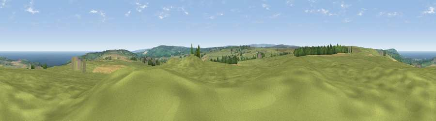

Viewpoint near Mickleby
#3542 in England · top 14% of its area beats it · near Mickleby · access?Where it is
The exact computed spot (NZ 79275 13612). Click the marker for map links.
Public access: no public right of way or access land is recorded at this exact spot — it may be on private land. Computed from Natural England's CRoW access layer and OpenStreetMap rights of way — not the legal definitive map. Always verify locally.
The view, rendered

A 360° render of this exact spot computed from the terrain model, tree cover and land cover — summer colours, afternoon light, calibrated against photographs of famous viewpoints. Real trees, hedges and buildings will differ in detail.
The panorama
Grey silhouette: terrain skyline in each direction (720 bearings, Earth curvature and refraction included). Dashed green: skyline with trees (+15 m) and buildings (+8 m) as obstacles. Blue strip: how far the ground is visible on each bearing.
Where the view opens
Wedge length = distance to the farthest visible ground on that bearing (vegetation-aware). Rings at 10, 25 and 50 km.
What fills the view
60% grassland · 19% water · 14% cropland · 6% woodland · 1% built-up
Angular shares of the visible panorama (visual magnitude), not map area. Landscape diversity 0.48 (0–1 Shannon).
Key numbers
More beautiful places nearby
The staircase of upgrades: each row has a higher view potential than everything closer. Driving times are estimates from straight-line distance, calibrated against real road routing — check an actual route before setting out.
| Place | Direction | Drive | Score |
|---|---|---|---|
| Viewpoint near Roxby | WNW · 2 km | ~4 min | 78.2 |
| Viewpoint near Hinderwell | NNE · 4 km | ~8 min | 79.5 |
| Viewpoint near Lythe | ENE · 4 km | ~9 min | 79.7 |
| Beacon Hill | N · 4 km | ~10 min | 82.3 |
| Viewpoint near Easington | NNW · 7 km | ~14 min | 86.9 |
| Viewpoint near Easington | NW · 8 km | ~16 min | 90.2 |
| The Knoll | SSW · 444 km | ~416 min | 91.0 |
54.51163, -0.77706 · source: screening · position refined by local search. Computed location — check access rights before visiting.